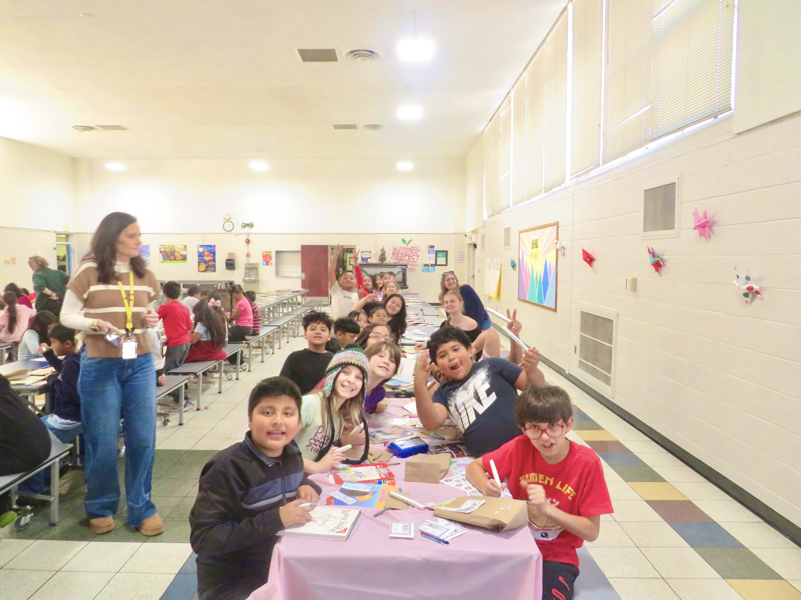
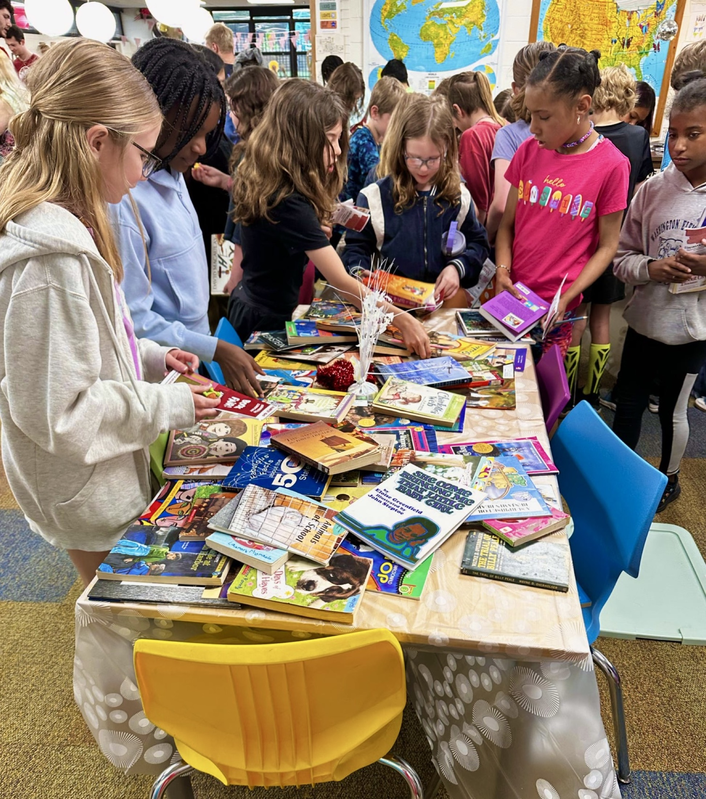
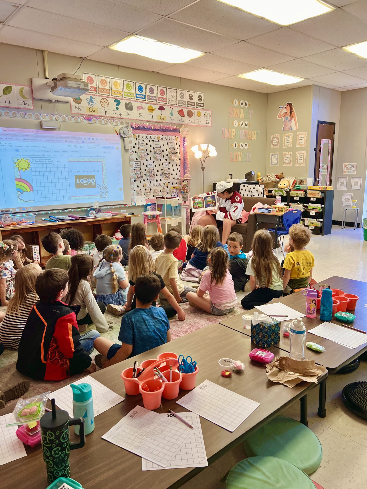
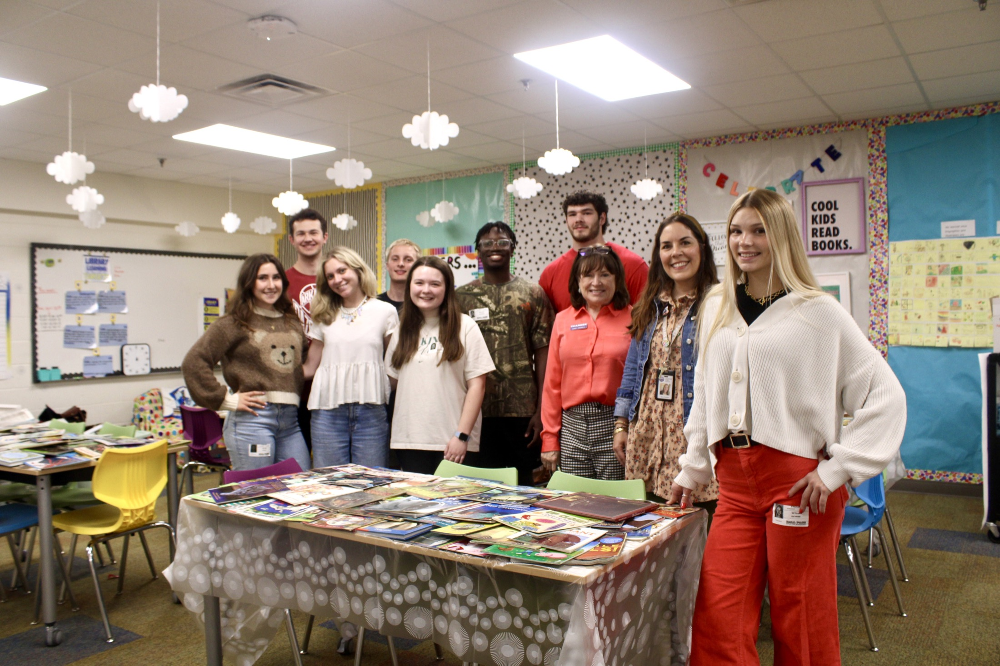
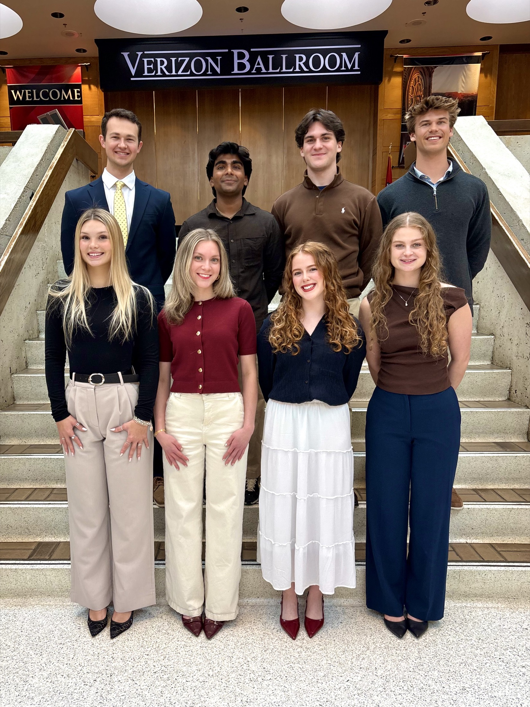
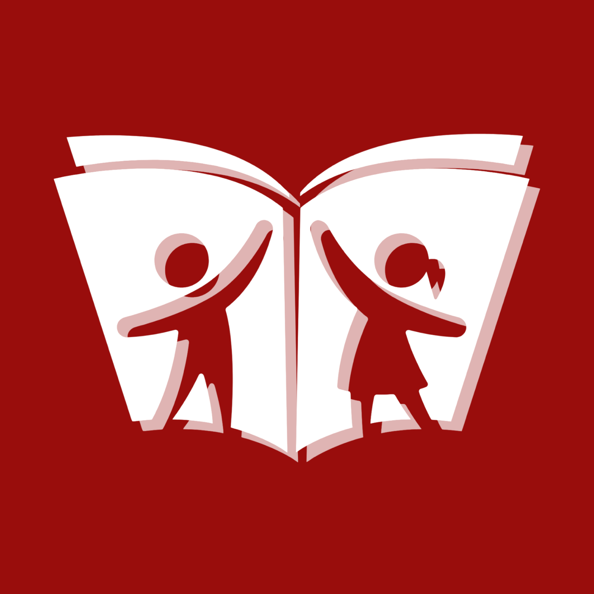
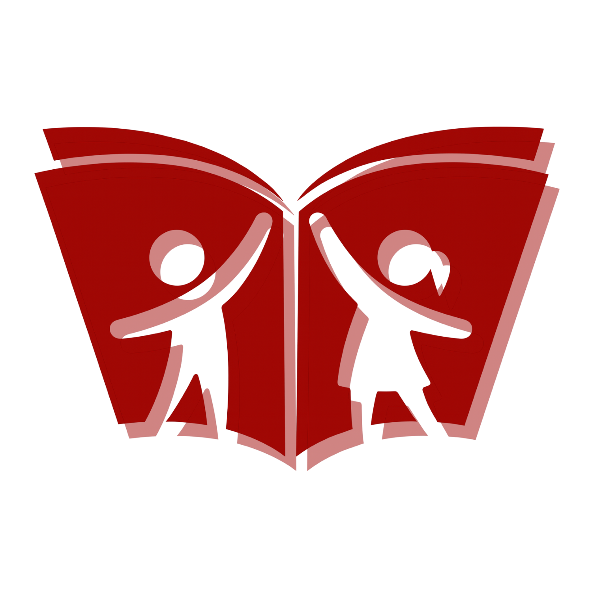
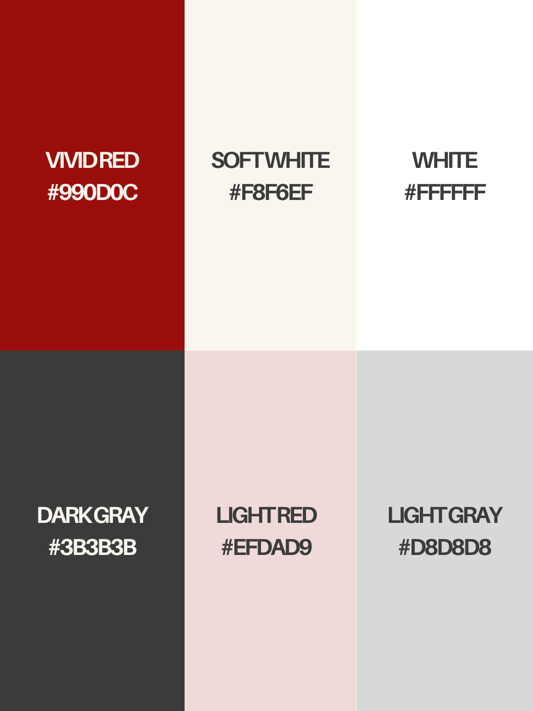
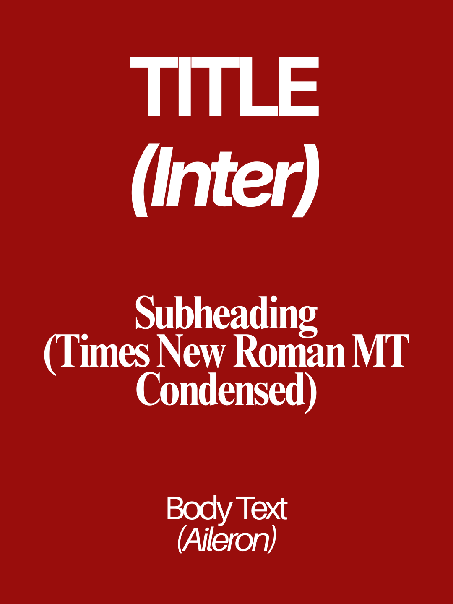

Making a mission clear—and moving it forward.
Razorbook Reach is a student-led literacy organization supporting access to books for elementary students across Northwest Arkansas. My role brought together communications, relationship-building, and the practical work of getting books into students’ hands.
I led brand identity, sponsor presentations, newsletters, and social media while coordinating school partnerships, volunteer engagement, and event logistics. Each audience needed something different: clear information for schools, a meaningful reason for sponsors to get involved, and an accessible way for students to participate.

Communication through execution
Making the message useful in the real world.
I worked across both the public-facing materials and the planning behind them. That meant adapting events to limited resources, responding to changes in real time, and respecting student privacy requirements.
I also cultivated university and AR READS relationships that led to an offer of $20,000 per semester to support literacy programming.
Impact at a glance
The mission in motion
From planning to participation.
The work extended beyond communications: organizing volunteers, preparing events, building school relationships, and creating moments that made book access tangible.




Brand lookbook & identity system
Professional enough to earn trust. Distinct enough to be remembered.
I created Razorbook Reach’s visual identity and brand lookbook to give the organization a consistent presence across schools, campus, community events, and sponsor conversations. The system needed to feel welcoming to young readers, recognizable to university students, and credible to professional partners.
Young readers
A visual language that feels energetic, welcoming, and approachable rather than institutional.
Student members
A recognizable system that makes events, updates, and ways to participate easy to understand.
Schools & sponsors
A polished identity that signals credibility, preparation, and responsible follow-through.




Built to continue
I kept the system unique but intentionally simple: a focused palette, two flexible logo treatments, and a clear type hierarchy. The result is expressive enough to stand apart and practical enough for future student leaders to use consistently without rebuilding the brand each year.
Community collaborations
Relationships that helped move the mission forward.
Clear materials and professional communication helped translate the mission into partnerships with literacy, hospitality, retail, and university organizations.
- AR Reads
- Summer Moon
- Chick-fil-A
- Raising Cane’s
- WildBerry Co.
- Arkansas Sports & Athletics Departments
The work, in practice
Sponsor presentation
Communicating the organization’s purpose, impact, and opportunities for support.
Newsletter
Bringing updates and opportunities to participate into one clear, consistent format.
Social media & event outreach
Giving students and community members the information they needed to get involved.
My takeawayA strong message gives people a reason to care. Clear planning and consistent follow-through give them a way to participate.